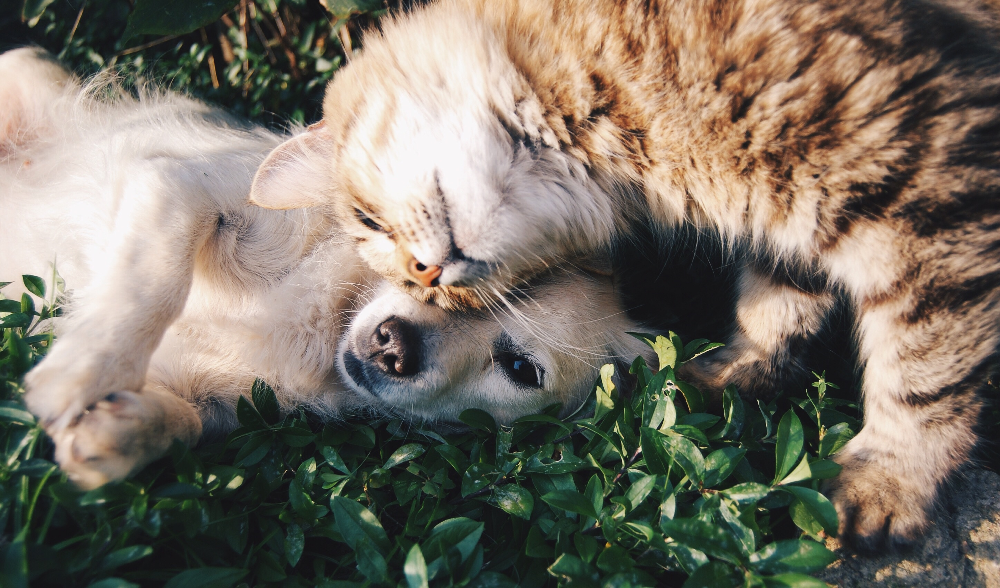

HELLO
FRIENDS!
PAWS ADOPT ME is an online, searchable database of animals who need homes. From the comfort of their personal computers, pet lovers can search for a pet that best matches their needs. PAWS ADOPT ME is made up of animal-care professionals and regular people volunteering for their local animal welfare organizations all working together to maintain active and accurate homeless pet lists. Most animal welfare volunteers have “real jobs” by day. The success and the magnitude of this project is largely due to their tireless efforts to make a difference. If you would like to help, let us know!